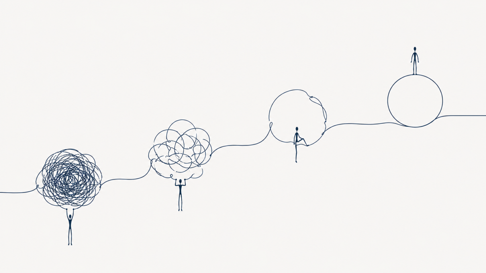

Pourquoi ton entreprise devient chaotique quand elle commence à grandir

Au début, tout tient.
Pas parce que c'est structuré ou optimisé. Juste parce que l'échelle reste humaine. Quelques clients, quelques projets, quelques décisions à prendre et une seule tête pour coordonner l'ensemble. Ton cerveau devient le système, et paradoxalement, ça fonctionne.
Puis quelque chose change. Pas brutalement, pas de manière spectaculaire. Par accumulation. Un client de plus, puis trois, puis dix. Des échanges qui s'ajoutent, des outils qui s'empilent, des exceptions qui deviennent la norme. Et progressivement, ce qui était fluide devient dense, ce qui était clair devient diffus, ce qui était simple devient... difficile à suivre.
C'est à ce moment précis que beaucoup d'entrepreneurs parlent de "désorganisation". Mais ce mot masque souvent quelque chose de plus fondamental : l'entreprise est passée d'un système simple à un système complexe sans changer d'architecture.
Le moment où la tête ne suffit plus
Il y a un moment très précis dans la vie d'une entreprise. Un moment où tout fonctionne encore, mais uniquement parce que tu compenses sans t'en rendre compte.
Tu compenses par ta mémoire, ton attention, ta disponibilité. Par cette capacité à "tout avoir en tête" qui devient, avec le temps, une charge de plus en plus lourde à porter. J'ai vu des dirigeants tenir ainsi pendant des mois, parfois des années, convaincus que le problème était leur propre manque de rigueur. Ce n'est pas ça.
À mesure que l'activité grandit, le volume d'informations finit par dépasser ce qu'une seule personne peut absorber, relier et restituer naturellement. Ce n'est pas un problème d'organisation personnelle. C'est une contrainte structurelle, et elle touche tout le monde au même stade de croissance.
Le point critique n'est pas la croissance elle-même. C'est le moment où l'entreprise continue de fonctionner comme si cette croissance n'avait pas eu lieu.
La complexité ne se voit pas, elle s'accumule
Le problème ne ressemble pas à une crise. Il ressemble à une somme de petites frictions qui s'accumulent jusqu'à ce qu'on ne puisse plus les ignorer.
Une information introuvable. Une note sans contexte. Une tâche oubliée parce qu'elle n'était écrite nulle part. Une décision prise en réunion qui n'a jamais été documentée, et que chacun se rappelle différemment six semaines plus tard. Un outil utilisé d'une façon par une personne, d'une autre façon par une deuxième, et pas du tout par une troisième.
Pris isolément, rien de grave. Mis ensemble, quelque chose apparaît : une sensation diffuse, un bruit de fond permanent, et surtout une perte de contrôle sans perte de travail. Tu travailles autant. Parfois plus. Mais tu contrôles moins.
À ce stade, l'entreprise ne semble pas dysfonctionnelle. Elle devient simplement plus lourde à piloter.
Les premiers symptômes du désordre
L'entreprise ne s'écroule pas. Elle se désynchronise.
Et ça commence presque toujours de la même façon : les mêmes questions reviennent, en boucle. "C'est où déjà ?" "On a validé ça ou pas ?" "Qui s'en occupe ?" "C'était prévu pour quand ?" Ce ne sont pas des problèmes de compétence. Ce sont des problèmes de mémoire externe inexistante. L'information existe quelque part, mais elle n'est pas structurée de manière à être retrouvée sans dépendre d'une personne précise.
En parallèle, les outils se multiplient. Notion, Google Drive, WhatsApp, Slack, emails, tableurs. Chaque outil a sa propre logique, mais ensemble ils n'en ont aucune. L'information ne circule plus. Elle se disperse.
Et puis vient la dépendance. Tout passe par toi, ou revient à toi, ou attend ta validation. Pas parce que les autres ne veulent pas agir, mais parce que rien n'est suffisamment structuré pour exister sans contexte. Sans toi comme contexte vivant.

Le vrai problème n'est pas l'organisation
C'est une confusion que je rencontre très régulièrement. Quand une entreprise devient chaotique, le réflexe est d'ajouter : plus d'outils, plus de process, plus de templates, plus d'automatisations. Alors on installe, on configure, on forme. Et rien ne change vraiment.
Parce que le problème n'est pas l'organisation. Le problème, c'est l'absence de structure. Et il y a une différence fondamentale entre les deux.
L'organisation, c'est ce que tu fais. La structure, c'est ce qui permet que ça tienne sans toi.
Imagine un restaurant où chaque cuisinier connaît les recettes par coeur mais où aucune n'est jamais écrite. Tant que les mêmes personnes sont là, ça tourne. Le jour où l'un d'eux part, une partie du restaurant part avec lui. Ce n'est pas un problème de cuisine. C'est un problème d'architecture.
Un outil ne sauve pas une absence de structure, il la digitalise
Dans un système flou, un bon outil ne crée pas de la clarté. Il accélère le désordre existant.
L'automatisation fonctionne de la même manière. Elle ne corrige pas un processus, elle le répète. Plus vite, plus souvent, avec plus d'impact. Si le système est flou en entrée, le résultat est un flou amplifié en sortie.
C'est pour ça que j'audite toujours avant de recommander un outil ou une automatisation. Pas par précaution, mais parce qu'un outil posé sur une mauvaise structure ne règle rien. Il documente juste l'inefficacité à plus grande échelle.
Ce qui se passe vraiment quand une entreprise grandit
Le changement n'est pas opérationnel. Il est architectural.
Une entreprise grandit toujours dans la même direction : elle passe de la mémoire individuelle à la mémoire collective. Tant que l'équipe est petite, la mémoire individuelle suffit. Chacun sait ce que l'autre sait. Les décisions se prennent dans les couloirs, les informations circulent naturellement, les règles implicites sont comprises par tout le monde parce que tout le monde a été là depuis le début.
Mais à mesure que l'entreprise grandit, cette mémoire partagée se fragmente. De nouvelles personnes arrivent. Elles n'ont pas le contexte. Elles ne savent pas pourquoi on fait les choses comme on les fait, parce que personne ne l'a jamais écrit. Ce qui était implicite devient fragile, puis opaque, puis source de friction.
Ce qui n'est pas écrit n'existe que tant que quelqu'un s'en souvient.
Le vrai enjeu : externaliser la pensée
À partir d'un certain seuil, le problème n'est plus de "mieux travailler". Le problème devient : comment faire en sorte que le travail puisse exister sans dépendre d'une seule personne ?
Ça implique de transformer progressivement la mémoire en système, les habitudes en processus, les décisions en règles claires et l'information en structure transmissible. Ce n'est pas une question de discipline ou de contrôle. C'est une question de conception.
Une structure bien conçue ne remplace pas l'intuition ou la flexibilité. Elle évite simplement que tout repose sur l'improvisation. Et surtout, elle libère de la bande passante mentale pour les décisions qui en valent vraiment la peine.
Une entreprise qui tient par sa structure n'est pas une entreprise rigide. C'est une entreprise qui peut enfin grandir sans que chaque palier de croissance se transforme en crise.
Une entreprise ne devient pas chaotique par hasard
Elle devient chaotique à un moment précis. Quand la croissance dépasse la capacité du système à absorber cette croissance. Et ce moment-là est trompeur parce que tout continue de fonctionner, mais tout devient plus lourd, plus lent, plus mental, plus dépendant.
À un moment, improviser coûte plus cher que structurer. La question n'est pas de savoir si tu vas atteindre ce seuil. C'est de savoir si tu l'auras anticipé ou subi. Les entreprises qui franchissent ce cap sans casse ne sont pas celles qui ont trouvé le bon outil. Ce sont celles qui ont arrêté de traiter la structure comme une contrainte et commencé à la traiter comme un avantage concurrentiel. C'est souvent à partir de là qu'une entreprise cesse simplement de fonctionner pour devenir réellement pilotable.